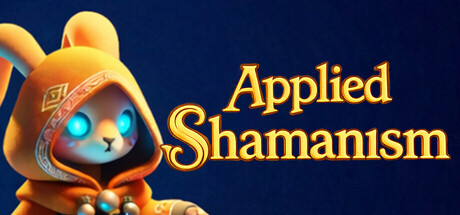

Resources for press & creators
Press kit
Everything you need to share the story of a rookie rabbit shaman.
Open press kit folder ↗The full archive will be added to this folder. Individual media files are available below.

At a glance
A gentle mystery in every patient.
Applied Shamanism is a cozy 3D adventure about a beginner rabbit shaman. Diagnose unusual illnesses with spirit vision, grow and gather elemental ingredients, and brew always-useful potions. Each patient brings a small mystery of folk ailments and guardian spirits.
There is no combat, damage, or time pressure.
- Developer & publisher
- Sinki Dream
- Planned release
- November 2026
- Platform
- Windows PC · Steam
- Genre
- Cozy adventure · Simulation · RPG
- Mode
- Single-player
- Languages
- 9 interface and subtitle languages on Steam
Ready to use
About the game
A cozy 3D game about a rookie rabbit shaman. Diagnose quirky illnesses with spirit vision, grow elemental ingredients, and brew always-useful potions in a village full of small mysteries.
In Applied Shamanism, a beginner rabbit shaman treats animal neighbors whose illnesses are tied to everyday life and guardian spirits. Use interactive spirit vision to investigate symptoms, gather and grow ingredients, and make potions that always have a use. Each patient is a standalone story to unravel at a gentle pace.
Official Steam media
Screenshots & trailer
Select an image to download the official 1920 × 1080 Steam screenshot.

Get in touch
Want to tell
this story?
For press coverage, creator collaborations, and access requests, write to us directly.
Email the team ↗vvarlamovkz@gmail.com